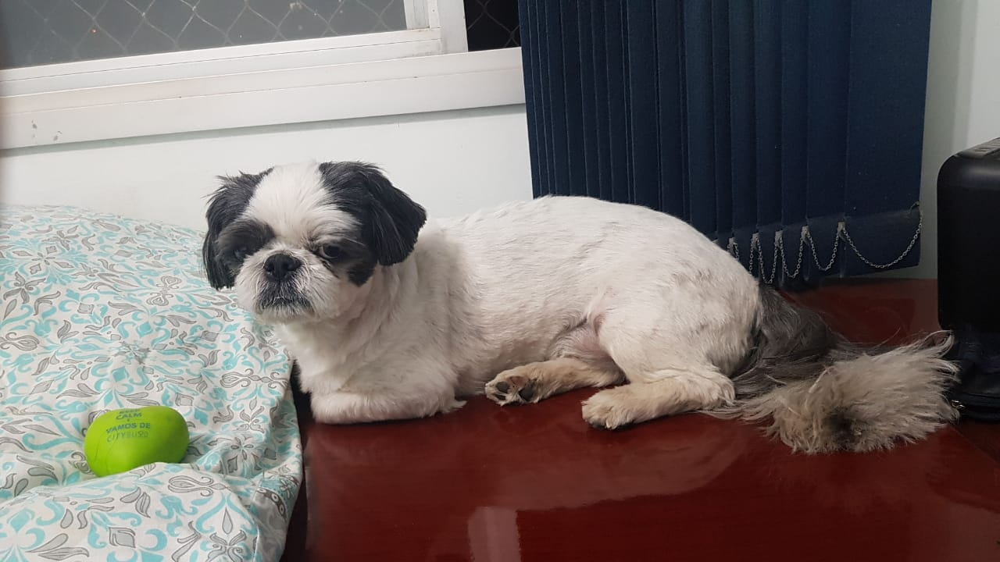

Estudante da Trybe #turma08!
Sou de Goiânia/GO, onde atualmente moro, mas buscando retornar à Campinas/SP no futuro próximo para terminar a formação em Matemática Aplicada e Computacional pela Unicamp.
Apaixonado por tecnologia e inovação.
Estudando para mudar o mundo através da programação.
Interessado em análise de imagens e data science.
Adoro jogar videogames e jogos online com meus amigos.
Irmão de um lindo cachorrinho chamado Jimmy Neutron.
Para os interessados em ótimo conteúdo sobre programação,desenvolvimento web, métodos de produtividade e mais, recomendo ver o blog da Trybe !
